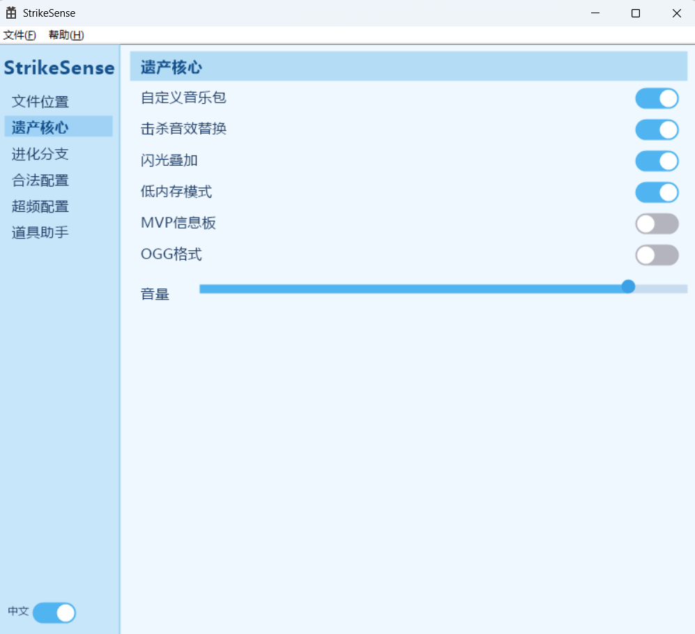
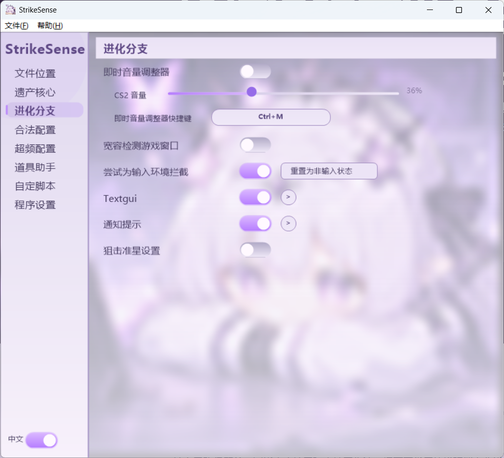
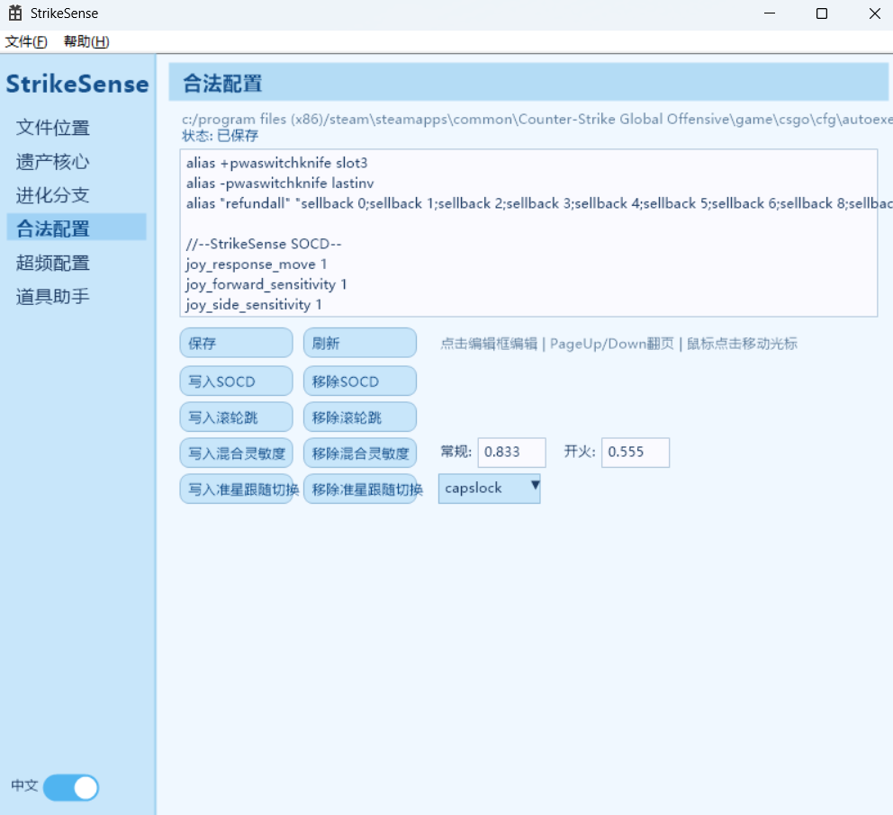
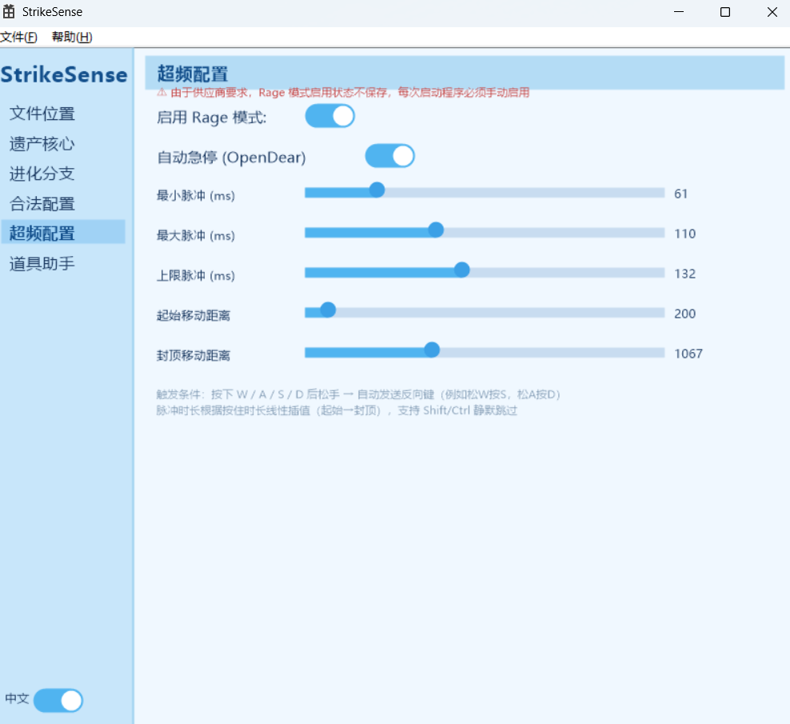
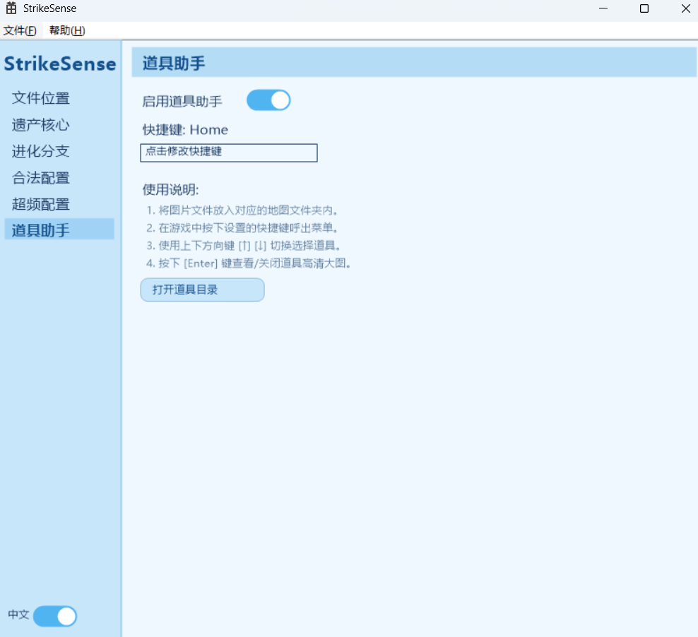
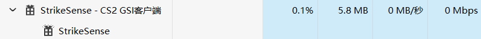
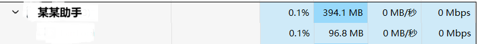

它不是传统意义上的辅助工具，而是一个安全的“游戏数据与操作增强底座”。
StrikeSense 通过对接反恐精英2（CS2）官方提供的 GSI (Game State Integration) 接口，以绝对安全、纯净的形式实时捕获对局事件。我们致力于在不破坏游戏公平性和内存完整性的前提下，通过物理级别的硬件逻辑优化与视觉重组，为硬核身法玩家、音效定制爱好者提供极致的竞技体验。
直观、精美、清晰的可视化配置体验

由DM客户端产品的GSI程序移植而来并经过全新优化的基本功能，剥离了共享内存信息，现在能够独立运行，且拥有精美的可视化UI设置，而无需手动编辑JSON文件。

除了移植而来的基本功能，StrikeSense提供了在DM-GSI未曾提供的功能，它们能大幅提高游戏体验，开启您的进化之旅。

我们从DearMoments-V3客户端（代号Autumn）提取了一些重要功能，并让它直接运行到autoexec，功能虽少，但实用性超强，且不需要再担心合法性问题。

我们一如既往地添加了Semi Rage功能，独家研发的急停计算公式加上用户可编辑参数，或许能让您的体验更好。

玩家在对局中无需切换到桌面看视频，热键一键在游戏最前端呼出全屏半透明教学。支持键盘快捷键无缝浏览各省时地图的烟、闪、火点位，按下 [Enter] 即可秒放高清瞄准点站位大图。现学现丢，让你瞬间具备职业级的道具覆盖率与战术威慑力！
精细矢量重构，打造顺畅的竞技扩展
一杀至五杀、MVP时刻、安装拆除炸弹、对局胜负触发自定义 WAV/OGG 音效。支持全局低内存保活模式。
完美解决 A/D 键冲突的 SOCD 急停优化、滚轮跳身法指令绑定以及微秒级延迟的完美跳投投掷逻辑。
全新重构的 Overlay 菜单，游戏内一键呼出，快速切换各点位高清大图，现学现丢。
遭到闪光弹全盲时，自动使用本地个性化护眼图片覆盖刺眼的纯白强光，保护视力，缓解长时间疲劳。
StrikeSense 内部包含一个专注于极致急停脉冲微调的“超频配置”面板。该模块涉及底层高频输入响应，属于行业的灰色地带。
⚠️ 注意：为了确保软件的绝对纯净与用户的资产安全，超频配置模块在软件中默认处于禁用状态，且系统不提供任何保存开启状态的功能（每次重启软件都必须手动确认且处于挥发状态）。我们强烈建议用户在完全了解服务器规则的前提下谨慎使用。
你想知道的，这里都有解答
我们只做“极致纯粹”的艺术品，而绝不制造“商业垃圾”。
反观市面上那些所谓的“XX电竞盒子”、“XX辅助助手”等同行产品，底层代码极度臃肿，内部塞满了强制性的云端服务器验证、隐蔽的云控后门后台、以及恶劣的开屏推广广告。这些产品不仅在后台疯狂蚕食你的 CPU 和系统内存，导致你的 CS2 游戏在实战中高频产生致命掉帧、卡顿，甚至在暗地里悄悄扫描你的本地隐私文件、带有极大的木马中毒与被控风险。
而 StrikeSense 走的是完全相反的极客路线：
• 完全无毒安全：底层基于纯净现代 C++ 原生构建，不包含任何恶意行为。
• 零联网 / 零云控 / 零云服务器：软件的核心运行逻辑完全不需要联网，没有让人恶心的强制自动更新，也没有云端监控，彻底杜绝了任何数据上传和后门篡改可能！
• 同类最高性能 / 极低占用：经过纯硬件级的多线程架构优化，即使开启核心的高清遮罩，资源占用也几乎低到可以忽略不计。我们将每一帧的绝对流畅度，都完整无缺地还给你的游戏！且内置了低内存模式，通过低内存模式，甚至可以将软件的运行内存压缩到10MB以内！


绝对不会。 StrikeSense 没有任何绕过 VAC 或任何反作弊系统的代码。音效和护眼闪光平替基于 Valve 官方开放的 GSI 状态服务器；身法优化和道具助手则是外部标准的键盘映射模拟和前台遮罩绘图。软件 100% 不读写、不注入 CS2 游戏内存，属于纯净的外部增强工具。
软件具备自主保活和引导功能，首次运行或点击主界面的“打开文件夹”按钮，系统会自动为您打开您需要的文件夹。另外，软件内置完美的 中/英文一键国际化切换（i18n），页面控件完美自适应。
核心定义：超频配置（Rage）绝对不是外挂。
首先，StrikeSense 没有且未来也绝不会包含任何“绕过、躲避、反侦测反作弊”的代码。如果它不合法，但同类型的软件或硬件通过驱动或其他手段尝试隐藏自己的行为导致反作弊抓不住它，那本质上是在欺诈反作弊。但实际情况是：目前市面上许多高端电竞硬件（如磁轴键盘的 Snap Tap 功能等）在硬件层面本身就具有完全相同的急停和脉冲响应优化。所以，因此，我们不需要隐藏自己的行为去绕过反作弊。
我们认为，明知某个行为是作弊，但是通过驱动或硬件（DMA设备访问游戏内存、USB驱动）实现绕过反作弊的行为并声称它完全合法的行为是可耻的，且在不同的比赛和服务器平台中，应当遵循不同的规则（如职业联赛和普通社区）。